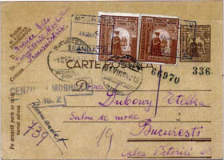

www.scherrer-rumaenien.deHorst Scherrer, Deutschland
"Die Lager- und
Unterdrückungssysteme in Rumänien von 1941 - 1944"
(Lagărele şi sistemele de oprimare în România între 1941 - 1944)
18.12.1943 Einschreibebrief einer ukrainischen Familie aus Odessa, adressiert an einen Familienangehörigen in Prag.
Scrisoare recomandată a unei familii ucrainiene din
Odesa, adresată unei rude din Praga
Auszug aus einer Vielzahl von Zivilpostspempeln und Zensurstempeln von Odessa.
Un extras dintr-un număr mare de ştampile poştale civile
şi ştampile de cenzură din Odesa

24.08.1942 Eine jüdische Zwangsarbeiterin in der Giesserei in Moghilev tätig schreibt an ihre Familie in Bukarest.
O muncitoare supusă la muncă forţată într-o turnătorie
din Moghilev îi scrie familiei ei din Bucureşti
21.06.1943 Anfrage der "Stadtpolizei für besondere Belange" (Judenbelange) an die Stadtpolizei in Cetatea-Alba (Bessarabien).
Investigaţie a "Poliţiei orăşeneşti pentru probleme
speciale" (probleme evreieşti) adresată poliţiei orăşeneşti din Cetatea
Albă (Basarabia)